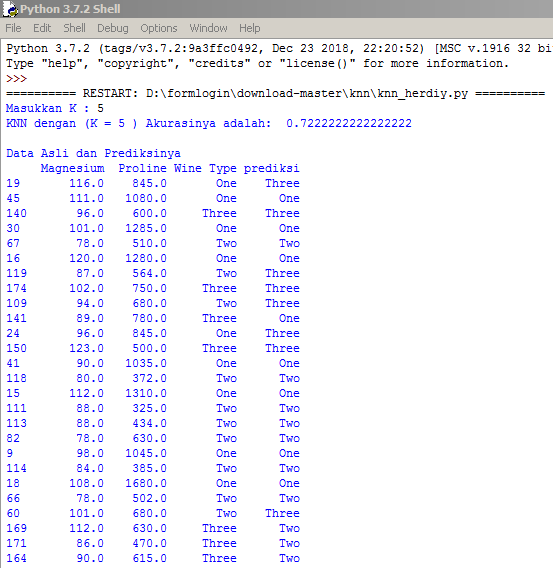

Penjelasan K - Nearest Neighbor¶
Apa K-Nearest Neighbor ???¶
K-Nearest Neighbor merupakan sebuah metode klasifikasi data berdasarkan pembelajaran terhadap sekumpulan data sebelumnya yang sudah terklasifikasi. atau bisa disebut juga bahwa K-Nearest neighbor atau KNN adalah algoritma yang berfungsi untuk melakukan klasifikasi suatu data berdasarkan data pembelajaran (train data set), yang diambil dari K tetangga terdekatnya (Neaerst Neighbor) . dengan K merupakan banyaknya tetangga terdekat.
Banyaknya K tetangga terdekat¶
Untuk menggunakan algoritma k nearest neighbors, perlu ditentukan banyaknya K tetangga terdekat yang digunakan untuk melakukan klasifikasi data baru. Banyaknya K sebaiknya merupakan angka ganjil, misalnya K = 1, 2, 3, dan seterusnya. Penentuan nilai K dipertimbangkan berdasarkan banyaknya data yang ada dan ukuran dimensi yang dibentuk oleh data. Semakin banyak data yang ada, angka K yang dipilih sebaiknya semakin rendah. Namun, semakin besar ukuran dimensi data, angka K yang dipilih sebaiknya semakin tinggi.
Algoritma K-Nearest Neighbor¶
- Menentukan parameter K ( jumlah tetangga paling dekat ).
- Menghitung kuadrat jarak eucliden objek terhadap data training yang diberikan.
- Mengurutkan hasil no 2 secara ascending ( berurutan dari nilai tinggi ke rendah )
- Mengumpulkan kategori Y (Klasifikasi nearest neighbor berdasarkan nilai k)
- Dengan menggunakan kategori nearest neighbor yang paling mayoritas maka dapat dipredisikan kategori objek.
Kelebihan dan Kekurangan algoritma KNN¶
Kelebihan :¶
- Lebih efektif di data training yang besar
- Dapat menghasilkan data yang lebih akurat
Kekurangan :¶
- Perlu ditentukan nilai k yang paling optimal yang menyatakan jumlah tetangga terdekat
- Biaya komputasi cukup tinggi karena perhitungan jarak harus dilakukan pada setiap query instance bersama-sama dengan seluruh instan dari training sample
Implementasi KNN menggunakan Python¶
Sekarang saya akan mengimplementasikan penggunaan algoritma K - Nearest Neighbor dengan menggunakan dataset " wine_dataset.csv " dan menggunakan bahasa pemrograman python versi 3.7.2.
Pada dataset tersebut saya akan mencoba memprediksi wine type dengan menggunakan fitur atau kolom Magnesium dan Proline.
Berikut merupakan langkah - langkahnya :¶
- Langkah 1 ( Install Library )
pip install pandas pip install sklearn
- Langkah 2 ( Import library )
### Import librari terlebih dahulu import pandas as pd from sklearn.neighbors import KNeighborsClassifier from sklearn.model_selection import train_test_split
Librari pandas digunakan untuk mengambil atau input data csv dan librari sklearn digunakan untuk menghitung knn dan mengklasifikasikannya.
- Langkah 3 ( memanggil file csv )
### Memanggil file csv dengan librari pandas data_orj = pd.read_csv("wine_dataset.csv")
- Langkah 4 ( Memanggil semua data )
### Mengambil semua data untuk percobaan data = data_orj.loc [:,'Alcohol':'Wine Type']
- Langkah 5 ( Memeanggil 2 kolom fitur dan 1 kolom class )
### Mengambil 3 kolom data_knn = data[['Magnesium','Wine Type','Proline']]
Wine type = sebagai kolom class
Magnesium dan Proline = sebagai 2 kolom fitur yang akan di hitung distancenya
- Langkah 6 ( Membuat inputan K )
### Input jumlah K atau jumlah tetangga terdekat inK = int(input("Masukkan K : "))
- Langkah 7 ( Mencari knn dan split data x dan y )
### Mencari knn dengan menggunakan sklearn neighbors clssifier knn = KNeighborsClassifier(n_neighbors = inK) x,y = data_knn.loc[:,data_knn.columns != 'Wine Type'], data_knn.loc[:,'Wine Type'] x_train,x_test,y_train,y_test = train_test_split(x,y,test_size = 0.3, random_state = 42) knn.fit(x_train,y_train) prediction = knn.predict(x_test)
sintaks diatas merupakan sintaks untuk mencari knn dan mensplit data 2 kolom fitur yaitu kolom magnesium dan proline, dan 1 kolom class yaitu wine type.
- Langkah 8 ( Tampilan akurasi dan prediksi data )
print('KNN dengan (K =',inK,') Akurasinya adalah: ', knn.score(x_test,y_test)) print("") datatest = pd.DataFrame(x_test) datatest["Wine Type"] = y_test datatest["prediksi"] = prediction print ("Data Asli dan Prediksinya") print (datatest)
- Hasil run program di atas

Jadi, itu saja yang dapat saya jelaskan semoga ilmunya bermanfaat dan dapat diterima dengan baik.